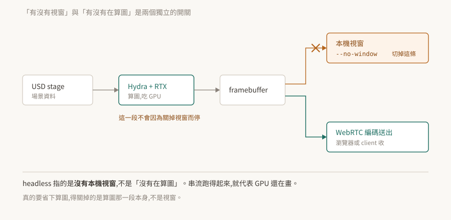

06 · 執行模式:headless 不是「沒在算圖」
把 Kit 應用搬上遠端伺服器時,第一個要做的決定是「畫面怎麼辦」。而這個決定常常被簡化成一個二選一——有 GUI 或 headless——於是產生一個代價不小的誤會:以為 headless 就是不吃 GPU。
實際上那是兩個獨立的開關。

驗證狀態:§2–§4 引用官方文件逐字。本 repo 沒有 Kit 環境,未實機驗證;§5 的限制與數字來自姊妹 repo 在 Isaac Sim 5.1 上的實測,已標明。§7 是待驗清單。
1. 根本問題:畫面要給誰看
一個 3D 應用算完一幀之後,那張圖有三種去處:畫到本機視窗、編碼後送去別的機器、或是誰也不給(只是為了讓下游元件有東西可讀)。
這三種需求對應的不是三種「模式」,而是輸出路徑要不要接上。把它想成模式,就會問出「headless 模式下 GPU 是不是就閒著」這種答不對的問題。
2. 兩個獨立的開關
官方對 --no-window 的描述只有一句,但這句把事情講死了:
"The
--no-windowflag keeps the editor UI hidden while still running the WebRTC stream."
隱藏編輯器介面,而串流照跑。 串流要送出畫面,畫面要先算出來——所以算圖那一段完全沒有停。
由此得到的判斷:
--no-window管的是本機視窗這條輸出路徑。- 算圖本身是另一件事,關掉視窗不會關掉它。
- 遠端伺服器上跑
--no-window而 GPU 使用率很高,是正常的,不是設定錯了。
真的想省下算圖,要動的是算圖那一段本身(例如不啟用算圖相關的 extension、或不建立 viewport),不是視窗旗標。
容器化的情境官方也是這樣描述的:"The container will start the headless Kit process and the WebRTC streaming server."——headless 的 Kit 程序與串流伺服器,兩個一起起來。
3. --exec:啟動後跑自己的腳本
沒有 UI 的時候要怎麼叫應用做事?用 --exec 在啟動時帶腳本進去:
kit.exe --exec "some_script.py arg1 arg2" --exec "open_stage"
可以給參數,也可以給多個 --exec。官方另外註明:"The script extension (.py) can be omitted"。
本 repo 沒有查到官方對執行順序、失敗處理、以及與 --enable 之間先後關係的明確說明——多個 --exec 是循序還是其他行為,文件沒有明講。要依賴那個順序之前,自己驗一次(§7)。
這一條加上 02 的 --enable 與 03 的 --/...,構成了「不碰 UI 操作 Kit」的三件工具:決定載什麼、設定成什麼樣、然後跑什麼。
4. 串流:三個 extension 的分工
WebRTC 串流不是單一功能,官方文件列出三個 extension,各管一段:
| extension | 官方描述 |
|---|---|
omni.kit.livestream.app |
"enables streaming of the entire application framebuffer in Omniverse Kit applications" |
omni.kit.livestream.webrtc |
"handles the pixel stream" |
omni.kit.livestream.messaging |
"carries browser-sent data to an event bus for application extensions to act on" |
分工的意義:畫面出去是一條路(前兩個),使用者的操作回來是另一條路(第三個)。瀏覽器送來的資料進到 event bus,再由應用的 extension 去接。
排查時這個分界很有用:看得到畫面但點不動,問題在第三個那一段,不在前兩個。
5. 串流的兩個結構性限制
以下來自姊妹 repo 在 Isaac Sim 5.1 上的實測。Isaac Sim 用的是 Kit 的 livestream 機制,所以限制屬於這一層;但數字與行為是在那個版本、那個組態上量到的,換版本要自己複驗。
一、同時只服務一個 video client。 訊令端一次只把 video track 交給一個 peer,第二個連上的 client 只拿得到 audio。而且控制事件走 WebRTC data channel,綁在那個唯一的 peer 上——所以「多人同時看」不是調參數就能解決的,要在外面架媒體伺服器分流。
二、解析度協商失敗的樣子不像失敗。 應用端算的解析度若高於 client 宣告的上限,Kit 端會拒絕送出超過上限的影格。實際觀察到的現象是:只送出第一張 keyframe 就停住,媒體伺服器等不到連續的 track 而斷線重連。
這個症狀看起來像網路不穩或玄學故障,而根因是兩邊的數字對不上。處理方式是把應用端的輸出降到 client 收得下的尺寸:
--/app/livestream/width=1280 --/app/livestream/height=720
不同 client 與不同版本的上限不一樣,以實際協商結果為準,不要照抄這組數字。
這條的形狀值得記住:在 Kit 這一層,「參數不相容」經常表現成「東西不動」而不是「報錯」——與 02 §7、05 §4 同一個家族。
6. headless 下要重新驗的東西
換到 headless 之後,有些在 GUI 下成立的事情不再成立,而且多半不會報錯。
已知的一個:05 §4 記的 OmniGraph 在某些 headless 組態下不 tick。那份紀錄的觸發條件來自應用層,但它示範了要檢查的形狀。
搬上 headless 之後值得逐項確認的:
- 圖有沒有在被求值(數節點被算幾次,不看物理時間)
- 需要 viewport 才存在的東西還在不在(相機、算圖相關的查詢)
- UI 相關的 extension 是否仍被拉進來——
--no-window只是不顯示,不等於沒載入
最後一項有實際成本:沒有人看的介面照樣佔記憶體與啟動時間。要真的不載,得從 .kit 檔的相依裡拿掉(01 §2),而不是靠旗標。這一條是推論,本 repo 未實測,驗法在 §7。
7. 待驗清單
| # | 待驗的斷言 | 怎麼驗 | 什麼算通過 |
|---|---|---|---|
| 1 | --no-window 不會停掉算圖(§2) |
同一個應用開關該旗標各跑一次,量 GPU 使用率與幀率 | 兩者接近 |
| 2 | 多個 --exec 的執行順序(§3) |
給兩個各自印出時間戳的腳本 | 印出的順序與命令列順序一致 |
| 3 | --exec 與 --enable 的先後(§3) |
腳本裡查一個由 --enable 帶入的 extension 是否已啟用 |
查得到則 enable 先於 exec |
| 4 | 串流只服務一個 video client(§5) | 兩個 client 同時連上 | 第二個沒有 video track |
| 5 | 解析度超過 client 上限會停在第一張(§5) | 刻意把 livestream/width/height 設高於 client |
收到一張後斷流 |
| 6 | --no-window 下 UI extension 仍被載入(§6) |
查 UI 相關 extension 的啟用狀態與記憶體 | 仍在啟用清單裡 |
第 1 條最值得先做:它決定了「headless 能不能省下 GPU 預算」這個規劃層級的問題,而目前的依據只有官方那一句話的推論。